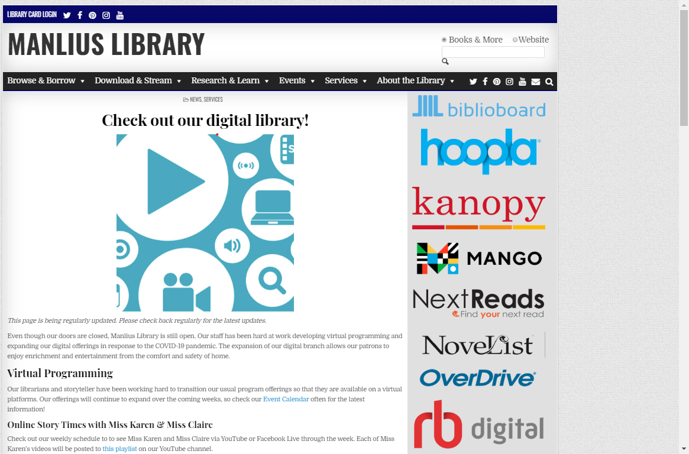
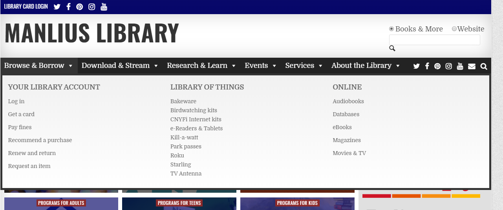

In this post, we'll talk about how a local library uses their digital platform to provide information and a service. In Don't Make me Think Revisited, Steve Krug, explains that, if something is usable, it means that,
"A person of average (or even below everage) ability and experience can figure out how to use the thing to accomplish something without it being more trouble than it's worth".
Using this definition, we'll talk about what's going well on the site and opportunities to make it easier for people to use.
This week's usability analysis is of the Manlius Library website. This website allows users to view and register for programs and events, provides information about library resources and is a gateway to access third-party websites like the county site to browse and reserve books.
Introduction
The Manlius Library serves all residents residing in the Fayetteville-Manlius (New York) school districts’ communities. It is a community center that:
- Loans books and other materials like DVDs
- Provide programs and events for people of all ages
- Offers meeting rooms for community organizations and groups
- Free access to online databases and resources
The website located at www.manliuslibrary.org serves as an information and service platform for all community members. Its mission is, “to enrich lives by empowering people, inspiring ideas, and building community. .
When you look at the website, you can tell that its a team full of people who want to help the public, it serves. It promotes a lot of programs and services- But I think it could be more effective it the information is displayed in a way that easier for visitors to understand.
Methodology
We're going to answer four questions about the site to learn about its usability. The questions are:
- Do we need to read everything, to understand what's going on?
- What's important on the page?
- What should I click?
- How easily can I find what I need?
Do we need to read everything, to understand what's going on?
Visitors to the library's homepage, are overwhelmed with information, colors, and images. Visitors must think when they are here. Visitors must read; rather than scan the page for a key word or phrase to help us get to where we need to go.
One critical flaw with this layout is that its not accessible for visually impaired people. The photographs do not have alt-text and the multiple text headers overlayed on the photographs are difficult to read.
Recommendations include to make the website accessible for screen readers and use a layout that removes white text from photographs. I'd want to see the page formateed so it supports scanning and remove repetitive information like the two navigation bar that include the social links
What's important on the page?
It is challenging for visitors to know what's important on this site. There are so many colors and photographs that nothing stands out. It's a prime example that, if everything is important, than nothing is important.
The site would benefit from a clear information hierarchy and a clean design-
What should I click?
Where to click to get the information you're looking for is not clear. An example is the Digital Resources page. The large blue image. Is just an image- It takes up a large amount of space and doesn't provide anything of value. It's not a link- nor is it particularly pretty. The links on the right hand side- are plopped there with zero explanation. Those are different digital resources, library care holders have access too- but that's not explained any where. Visitors are expected to know that information.
 screen capture, www.manliuslibrary.orgOne recommendation is to redesign this page with the intent to make the most useful content prominent for site visitors. Make what's clickable, obvious.
How easily can I find information?
The website is full of useful information- but its hard to sift through the noise to find what you need. Information is not consistent. The information hierarchy in the drop down menus isn't consistent with the content on the page.
 screen capture, www.manliuslibrary.orgOne recommendation is to make the information consistent. Understanding that the page is used by a large and diverse customer base, it may help to run user- testing like card sorting or observing people completing tasks- to better understand where your customers look for information.